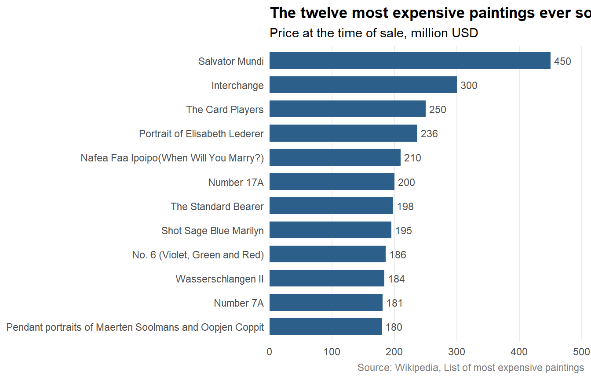
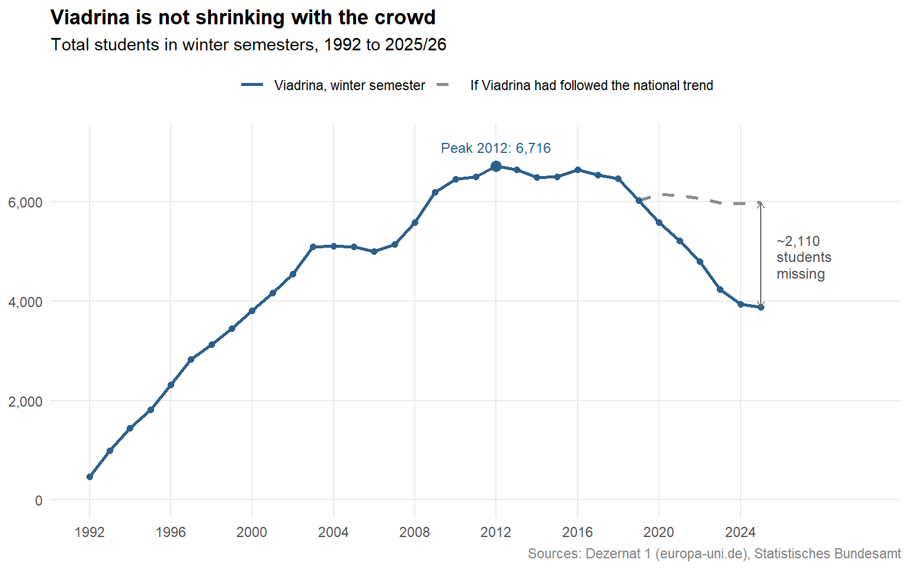

3.1 Web Data
“Over the last two years alone, 90 percent of the data in the world was generated.”
Volume was never the hard part. The quote is about how much data exists; this section is about what shape it arrives in.
Practically everything is on the web, and both data scientists and social scientists live off it: numerical, textual, spatial and relational data, used to train models, to study human behaviour and to test research questions. Most of it, though, comes in a civilised way — as a file you download or a service you query. Benchmark data sets from Kaggle, official numbers from Destatis or Eurostat, surveys from GESIS, digitised parliamentary records, weather and financial feeds.25 None of that needs the techniques below.
Web data, as we use the term here, is what the browser builds for a human reader: the content that a server delivers as HTML and dresses up with CSS. Two kinds of it interest us. Numbers — prices, student counts, rankings — sitting in tables, lists or plain sentences; that is this section. And text — articles, reviews, speeches, posts — which is its own craft and has its own section, Text Data. Other shapes exist and mostly leave the browser behind: spatial data comes as map files rather than as page content (see Geo Data), and relational data such as social networks is handed out, if at all, through the platform's own gate rather than through the page you see.
Data scraping is the technique of letting a program extract data from output that was written for people, not for programs. On the web this is called web scraping (also crawling or spidering): read the page, find the values, build a table. The same idea applied to reports and documents is PDF scraping, or more generally report mining — a harder problem, because a PDF knows where a character sits on the page but not which column it belongs to. We stay with HTML and only borrow one PDF result later on.
And one warning before any code: scraping should always be the second idea. Look for a download button. Check whether the same numbers exist somewhere friendlier. Ask whether the provider offers a database connection or an API — that route has its own section, Remote Data, and it is a far better place to be. Write to the person who runs the site, the most underrated option of all. Each of those gives you data that still works next year; a scraper works until somebody redesigns a page.
When none of them exists, we scrape. Two examples follow, ordered by how much the website fights back.
- A ranking on Wikipedia. The data already sits in a real HTML
<table>, so getting it takes three lines. Getting it usable still takes a few more: footnote markers, an image column, prices in four currencies. - Student numbers of a university. No table, no download button. The values hide inside collapsible boxes as running text, and even then we only get the most recent semesters — the long history lives in a separate PDF, so a complete series has to be assembled from two sources.
Both follow the same four steps: find the data, get it, clean it, look at it.
3.1.1 Most expensive paintings
What does a painting of Christ have in common with a Pacific island state?
On 15 November 2017, Salvator Mundi — attributed to Leonardo da Vinci — was auctioned at Christie's in New York. Nineteen minutes of bidding later the hammer fell at 450.3 million US dollars. In the same years, the nominal gross domestic product of the Marshall Islands, a country of about 60,000 people, was around 220 million US dollars. One canvas, one country, and the canvas wins by a factor of two.
The most expensive paintings play in the league of small national economies — and English Wikipedia keeps score.
3.1.1.1 Finding the data
Before writing a single line of code, ask the question that decides everything else: in what form does this data exist? So let us look at the page first. This is the address we are going to work with:
The window below is not a screenshot. It is the live page, embedded into this book. Scroll down inside it until you reach the long ranking with the columns Adjusted, Original, Name, Artist. That also means the content changes without asking us: a new record sale, a renamed column, a restructured article — and code that worked today may need repair in a year or two. Keep that in mind while reading the rest of this section.
That ranking is a real HTML table, and that is the best news a scraper can get. To see it yourself, use the keyboard shortcut CTRL + U in the browser (Chrome, Firefox, Edge, Opera) to view the source code of a page. Alternatively, right click and choose "show source code". A table in HTML always follows the same skeleton: <table> wraps rows <tr>, a row wraps header cells <th> and data cells <td>.
This regular skeleton is the reason why table scraping is so comfortable. We do not have to describe where a value sits — we only have to point at the table. Wikipedia even labels its tables with the CSS class wikitable, which is the address we will use.
3.1.1.2 Scraping
Three steps, three functions from the rvest package. read_html() downloads the page, html_element() picks the node we want, and html_table() turns that node into a data frame. Wikipedia marks its tables with the CSS class wikitable, so the selector "table.wikitable" is all we need. html_element() in singular returns the first match.
library(tidyverse)
library(rvest)
paintings_url <- "https://en.wikipedia.org/wiki/List_of_most_expensive_paintings"
paintings_raw <- paintings_url %>%
read_html() %>% # 1. download the page
html_element("table.wikitable") %>% # 2. pick the first wikitable
html_table() # 3. turn the node into a data frame
dim(paintings_raw)
#> [1] 123 11
names(paintings_raw)
#> [1] "Adjusted(millionUSD)" "Original(million USD)" "Name"
#> [4] "Image" "Artist" "Year"
#> [7] "Date of sale" "Rankat sale" "Seller"
#> [10] "Buyer" "Auction house"Ninety-odd rows and eleven columns, in three lines of code. Everything after this point is cleaning.
3.1.1.3 Cleaning
The result is already rectangular, but the column names are long, one column holds nothing but images, and every cell still carries Wikipedia's footnote markers such as [b]. Three moves are enough: keep four columns under short names, delete everything in square brackets, and let parse_number() turn the rest into numbers. Then show the result right away.
library(DT)
paintings <- paintings_raw %>%
# 1. Keep four columns and rename them. starts_with() is safer than the
# full header, which is long and may be edited on Wikipedia.
select(
painting = starts_with("Name"),
artist = starts_with("Artist"),
price = starts_with("Original"),
sale = starts_with("Date of sale")
) %>%
mutate(
# 2. "[b]" and friends are footnote markers, not content.
painting = str_squish(str_remove_all(painting, "\\[.*?\\]")),
artist = str_squish(str_remove_all(artist, "\\[.*?\\]")),
# 3. Text to number. parse_number() ignores currency signs and notes.
price_musd = parse_number(price),
# The sale date is a full date, we only want the four-digit year.
year_sold = parse_number(str_extract(sale, "\\d{4}"))
) %>%
select(painting, artist, price_musd, year_sold) %>%
# 4. Rows without a price are separators or notes, not paintings.
filter(!is.na(price_musd))
datatable(
paintings,
rownames = FALSE,
colnames = c("Painting", "Artist", "Price (million USD)", "Year of sale"),
options = list(pageLength = 5, dom = "ftip")
) %>%
formatRound("price_musd", digits = 1)Four clean columns, sortable and searchable. Ninety paintings that were text on a website a minute ago.
3.1.1.4 Visualizing
A ranking asks for a sorted bar chart. The plotting code is hidden here — this section is about getting data, not about ggplot2 — but it is in the source file if you want it.

What did we actually do? We took a public web page and left with a data set — three lines to scrape, five to clean. That was easy for one reason only: somebody else had already put the numbers into a <table>, and we could point at it by name.
Three things could still go wrong, and it is worth naming them before they bite.
- The page changes. Column names, footnotes and row order on Wikipedia are edited by strangers. Our chunk downloads the live page at every render, so a rename tomorrow breaks the book today. Keeping a local copy of the page — or of the cleaned result — is the cure.
- The numbers are not comparable. Prices are converted from euros, pounds and yen at different exchange rates, and inflation adjustment is a second column for a reason. Scraping gives you values, not meaning.
- A table is a luxury. Most websites publish numbers as sentences, in expandable boxes, or as a PDF link.
The next example has exactly that problem, so we will have to describe where a value sits before we can read it.
3.1.2 Student numbers at Viadrina
Did you notice fewer and fewer fellow students sitting next to you? Let us check whether that feeling survives contact with data. Dezernat 1 of the European University Viadrina publishes enrollment statistics for every semester. There is no download button, no API, and no <table> tag. This is what most real scraping looks like. We walk the same four steps as before — find, scrape, clean, visualize — and every one of them is harder.
3.1.2.1 Finding the data
Again, the address first:
And again the live page, embedded. Click one of the semester headings — the section folds open and reveals the numbers. That folding is the whole problem in one gesture: what looks like a list of semesters is one long page whose content is hidden inside collapsible boxes.26
Where do the numbers live? The website was redesigned since the first version of this chapter. Three levels are worth distinguishing.
- The overview page. One single HTML page collects all recent semesters in expandable sections (an "accordion"). Older versions of the site used one URL per semester — this is exactly the kind of change that breaks a scraper.
- The detail files. Every semester links to four PDFs in its own folder, for example
.../_dateien-statistik/884-2026-Sommersemester/Uebersicht-Studierende-20261.pdfand.../_dateien-statistik/885-2025-Wintersemester/WiSe-2025-Fachsemester.pdf. Note the folder numbers884,885,886: they do not run in chronological order. Guessing URLs would fail here; we have to read the links from the page. - The long history. One PDF holds the total student number since 1992,
.../_dateien-statistik/1-entwicklung-gesamtstudierendenzahl/entwicklung-der-gesamtstudierendenzahl.pdf. This is the PDF-scraping part of the story, and it needs a different toolbox —pdftoolsandtabulizerin R, or one of the free online PDF-to-CSV converters. The cleaned result is stored in the repository asdata/Viadrina/viadrina_students.csv, so this chapter can use the history without repeating the extraction.
The lesson of this list: the recent numbers and the long history are two different sources. Scraping the page alone would give us seven years and a wrong story.
In what form? Not as a table. Every semester lives in one div with the class accordion-item. Inside, the heading sits in a <button> and the numbers sit in a single <p> where <br> tags separate the lines. Label and value are one piece of running text.
So the plan is: take all accordion-item nodes, read the heading from the button, read the text from the body — and only afterwards pull the numbers out of that text.
3.1.2.2 Scraping
Download once, parse often. A book should still build when a website is down or has changed overnight. We therefore save the raw page in the repository and always parse the saved copy. The download only happens when we deliberately ask for it.
viadrina_url <- paste0(
"https://www.europa-uni.de/de/universitaet/einrichtungen/verwaltung/",
"dezernat-1/studierendenstatistik/index.html"
)
viadrina_file <- file.path(
"data", "Viadrina", "viadrina-student-statistics.html"
)
# The snapshot is only re-downloaded when we ask for it explicitly, by
# setting options(bfid.refresh_viadrina = TRUE) before rendering the book.
if (isTRUE(getOption("bfid.refresh_viadrina", FALSE))) {
dir.create(dirname(viadrina_file), recursive = TRUE, showWarnings = FALSE)
xml2::write_html(read_html(viadrina_url), viadrina_file)
}
page <- read_html(viadrina_file)The links we identified above can now be listed instead of guessed.
links <- page %>%
html_elements("div.accordion-body a")
tibble(
link = html_text2(links),
href = html_attr(links, "href")
) %>%
slice(1:4)
#> # A tibble: 4 × 2
#> link href
#> <chr> <chr>
#> 1 Entwicklung der Gesamtstudierendenzahl seit 1992 _dat…
#> 2 Übersicht zu den Studierenden _dat…
#> 3 Studierende nach Studienfach, Abschlussziel und Fachsemester _dat…
#> 4 Grundständig Studierende nach Bundesland Erwerb deutsche Hochschulzugan… _dat…Now the harvest itself. html_element() in singular is applied to a whole set of nodes and returns exactly one heading and one body per accordion item — NA when an item has none. html_text2() converts <br> into a line break, which is what makes the labels findable at all.
sections <- page %>%
html_elements("div.accordion-item")
viadrina_raw <- tibble(
heading = sections %>% html_element("button") %>% html_text2(),
body = sections %>% html_element(".accordion-body") %>% html_text2()
)
viadrina_raw %>%
slice(1:3) %>%
mutate(body = str_trunc(str_replace_all(body, "\n", " | "), 70))
#> # A tibble: 3 × 2
#> heading body
#> <chr> <chr>
#> 1 "\r Zeitreihe\r" "\r | | Entwicklung der Gesamtstudierendenzahl…
#> 2 "\r Sommersemester 2026\r" "\r | | StudierendenzahlenStudierende gesamt: …
#> 3 "\r Wintersemester 2025/26\r" "\r | | StudierendenzahlenStudierende gesamt: …Fifteen rows of raw text: fourteen semesters plus one section called Zeitreihe that holds only the link to the long-run PDF. Nothing is a number yet.
3.1.2.3 Cleaning
Two ingredients. First a helper that finds one label in a block of text and returns the number behind it. German thousands separators are dots, so 1.234 has to become 1234. The colon is optional, because on some semesters it is simply missing (Ausländer*innen 1441).
pick_number <- function(text, label) {
# "Studierende gesamt: 4.797" -> "4.797" -> 4797
hit <- str_extract(text, paste0(label, "\\s*:?\\s*[\\d.]*\\d"))
parse_number(
str_extract(hit, "[\\d.]*\\d$"),
locale = locale(decimal_mark = ",", grouping_mark = ".")
)
}The second ingredient is a list of labels — and here the site takes revenge. The wording changed along the way: what used to be weiblich: 3.607 is now Weibliche Studierende: 2016. A scraper that only knows the new wording silently returns NA for the older semesters, which is the most dangerous kind of scraping bug. We therefore allow both spellings with a regular expression alternative (A|B).
Now everything can be assembled. Instead of testing the heading with a strict pattern, we extract the semester label out of it. That is more forgiving: the Zeitreihe section simply yields NA and drops out by itself.
viadrina <- viadrina_raw %>%
# Keep the semester label only. This drops the "Zeitreihe" section, and it
# survives rvest versions that wrap button text as "[Button: ... ]".
mutate(label = str_extract(heading, "(Sommer|Winter)semester\\s+\\d{4}(/\\d{2})?")) %>%
filter(!is.na(label), !is.na(body)) %>%
transmute(
semester = label,
# "Wintersemester 2025/26" -> term "winter", year 2025.
term = if_else(str_starts(label, "Winter"), "winter", "summer"),
year = parse_number(str_extract(label, "\\d{4}")),
# One line per value. (A|B) covers the old and the new wording.
students = pick_number(body, "Studierende gesamt"),
german = pick_number(body, "Deutsche( Studierende)?"),
international = pick_number(body, "Ausländ(ische Studierende|er\\*innen)"),
women = pick_number(body, "(Weibliche Studierende|weiblich)"),
men = pick_number(body, "(Männliche Studierende|männlich)"),
freshers = pick_number(body, "1\\. Fachsemester")
) %>%
# Chronological order: summer semester first, winter semester second.
arrange(year, term)
glimpse(viadrina)
#> Rows: 14
#> Columns: 9
#> $ semester <chr> "Wintersemester 2019/20", "Sommersemester 2020", "Winter…
#> $ term <chr> "winter", "summer", "winter", "summer", "winter", "summe…
#> $ year <dbl> 2019, 2020, 2020, 2021, 2021, 2022, 2022, 2023, 2023, 20…
#> $ students <dbl> 6020, 5409, 5586, 5131, 5209, 4851, 4797, 4366, 4242, 40…
#> $ german <dbl> 4413, 4040, 4083, 3698, 3682, 3360, 3201, 2925, 2711, 24…
#> $ international <dbl> 1607, 1369, 1503, 1433, 1527, 1491, 1596, 1441, 1531, 15…
#> $ women <dbl> 3607, 3212, 3285, 3037, 3045, 2847, 2785, 2549, 2456, 23…
#> $ men <dbl> 2413, 2197, 2301, 2054, 2164, 2004, 2012, 1817, 1786, 17…
#> $ freshers <dbl> 1353, 405, 1303, 394, 1138, 403, 915, 317, 847, 481, 743…One row per semester, nine columns, no manual typing. Note the arrange(): within one calendar year the summer semester comes first (Sommersemester 2024), the winter semester second (Wintersemester 2024/25).
Make the table talk. Two derived columns turn a list of digits into a story: the share of international students and the change against the same semester one year earlier.
viadrina_display <- viadrina %>%
# Compare summer with summer and winter with winter, never across terms.
group_by(term) %>%
mutate(change = students / lag(students) - 1) %>%
ungroup() %>%
# Newest semester on top.
arrange(desc(year), desc(term)) %>%
transmute(
Semester = semester,
Students = students,
`vs. year before` = change,
German = german,
International = international,
`International share` = international / students,
Women = women,
Men = men,
`First semester` = freshers
)
datatable(
viadrina_display,
rownames = FALSE,
options = list(pageLength = 6, dom = "tip", ordering = FALSE)
) %>%
formatRound(c("Students", "German", "International", "Women", "Men",
"First semester"), digits = 0, mark = ",") %>%
formatPercentage(c("vs. year before", "International share"), digits = 1)Three things stand out. First, the university shrinks in almost every single semester — the vs. year before column is negative nearly all the way down. Second, it shrinks although the number of international students hardly moves at all (1,607 in winter 2019/20, 1,648 in winter 2025/26). The decline is a decline of German students, and the international share therefore climbs from 27 % to over 40 %. Third, the first semester column shows where the intake happens: 875 newcomers in winter 2025/26 against 324 in the following summer. Winter is the semester that decides the year.
Add the long history. The scraped page only reaches back to winter 2019/20. The PDF-derived file adds the years since the university was founded. It carries two title rows and one signature row, so we name the columns ourselves, read everything as text, and keep only the rows that start with a year.
history_columns <- c(
"year", "total", "female", "female_pct", "german", "german_pct",
"foreign", "foreign_pct", "polish", "polish_pct"
)
viadrina_history <- read_csv(
file.path("data", "Viadrina", "viadrina_students.csv"),
col_names = history_columns,
col_types = cols(.default = col_character())
) %>%
# Keep data rows only: two title rows and one signature row have no year.
filter(str_detect(year, "^\\d{4}$")) %>%
# Everything was read as text. "50,0%" becomes 50.0, then 0.50.
mutate(across(everything(),
~ parse_number(.x, locale = locale(decimal_mark = ",")))) %>%
mutate(across(ends_with("_pct"), ~ .x / 100))
range(viadrina_history$year)
#> [1] 1992 2020Both sources describe winter semesters, and they overlap in 2019 and 2020. We keep the history up to 2018 and take everything from 2019 onwards from the scraper.
3.1.2.4 Visualizing
Is it Viadrina? A falling curve on its own proves nothing. Between 2019 and 2025 a pandemic happened, a demographic dip arrived, and every German university had to deal with both. The honest question is therefore not "does Viadrina shrink?" but "does Viadrina shrink more than others?".
The benchmark comes from the Federal Statistical Office: total students at German universities, winter semester by winter semester.27 The year refers to the start of the winter semester, so 2025 is winter semester 2025/26.
germany <- tribble(
~year, ~students_de,
2019, 2891049,
2020, 2948700,
2021, 2946100,
2022, 2915700,
2023, 2868300,
2024, 2864100,
2025, 2876900
)Instead of plotting two series on wildly different scales, we ask a counterfactual question: how many students would Viadrina have today if it had simply followed the national trend since 2019? We take the national index and apply it to Viadrina's 2019 level.
base_viadrina <- viadrina_winter %>% filter(year == 2019) %>% pull(students)
base_germany <- germany %>% filter(year == 2019) %>% pull(students_de)
# Safety net: if the scraper ever comes back empty, stop here with a clear
# message instead of failing three lines later for a cryptic reason.
stopifnot(length(base_viadrina) == 1, length(base_germany) == 1)
# National index (2019 = 1) applied to Viadrina's 2019 level.
counterfactual <- germany %>%
transmute(year, students = students_de / base_germany * base_viadrina)
gap <- counterfactual$students[counterfactual$year == 2025] -
viadrina_winter$students[viadrina_winter$year == 2025]
round(gap)
#> [1] 2114One graph, one message.
peak <- viadrina_winter %>% slice_max(students, n = 1)
ggplot(viadrina_winter, aes(x = year, y = students)) +
geom_line(data = counterfactual,
aes(colour = "If Viadrina had followed the national trend"),
linetype = "dashed", linewidth = 0.9) +
geom_line(aes(colour = "Viadrina, winter semester"), linewidth = 1) +
geom_point(aes(colour = "Viadrina, winter semester"), size = 1.6,
show.legend = FALSE) +
geom_point(data = peak, colour = "#2C5F8A", size = 3) +
annotate("text", x = peak$year, y = peak$students + 380,
label = paste0("Peak ", peak$year, ": ", format(peak$students, big.mark = ",")),
size = 3.2, colour = "#2C5F8A") +
annotate("segment", x = 2025, xend = 2025,
y = viadrina_winter$students[viadrina_winter$year == 2025],
yend = counterfactual$students[counterfactual$year == 2025],
colour = "grey40", linewidth = 0.5,
arrow = arrow(ends = "both", length = grid::unit(0.15, "cm"))) +
annotate("text", x = 2025.8, y = 4900,
label = paste0("~", format(round(gap, -1), big.mark = ","),
"\nstudents\nmissing"),
size = 3.2, colour = "grey30", hjust = 0, lineheight = 0.95) +
scale_colour_manual(
values = c(
"Viadrina, winter semester" = "#2C5F8A",
"If Viadrina had followed the national trend" = "grey55"
),
breaks = c(
"Viadrina, winter semester",
"If Viadrina had followed the national trend"
)
) +
scale_x_continuous(breaks = seq(1992, 2024, by = 4),
limits = c(1992, 2030)) +
scale_y_continuous(labels = scales::comma, limits = c(0, 7200)) +
labs(
title = "Viadrina is not shrinking with the crowd",
subtitle = "Total students in winter semesters, 1992 to 2025/26",
x = NULL, y = NULL, colour = NULL,
caption = "Sources: Dezernat 1 (europa-uni.de), Statistisches Bundesamt"
) +
theme_minimal(base_size = 11) +
theme(
legend.position = "top",
panel.grid.minor = element_blank(),
plot.title = element_text(face = "bold"),
plot.caption = element_text(colour = "grey50")
)
The curve rises for twenty years, peaks in 2012, drifts down slowly, and then falls off a cliff from 2019 onwards. The dashed line does something else entirely: German universities are today within half a percent of their 2019 level, while Viadrina lost 36 % of its students. Brandenburg as a federal state did not shrink at all — it grew from 50,304 students in winter 2021/22 to 54,608 in winter 2025/26.28
So the pandemic and the demographic trend are not the explanation. Something specific to this university, or to its location and profile, is. That is where a scraping exercise ends and a real research question begins: enrollment by subject, the share of Polish students (which fell from 35 % in the 1990s to 6 % in 2020), programme closures, and competition from Berlin. All of those numbers are, again, one semester folder away.
3.1.3 What scraping is good for
Two pages, two techniques, one lesson. The Wikipedia ranking was structured by somebody who wanted it read; the university page was structured by somebody who wanted it looked at. In both cases we had to reconstruct, from the outside, a shape that already existed somewhere on the inside — in a spreadsheet in an office, in a database behind a web server.
That reconstruction is always a little bit fragile. Column names change, wordings change, a redesign moves everything. So scraping earns its place only when the friendlier routes are closed: no download, no database, no API, and nobody to ask. Then it is a genuinely powerful skill, and rvest plus a handful of regular expressions will get you a surprisingly long way.
When those routes are open, take them. Remote Data shows what the same work looks like when the provider hands you a query interface instead of a page: no selectors, no snapshots, no repair work in two years.
Good starting points: Kaggle and the UCI repository for machine-learning data, Destatis and Eurostat for official statistics, GESIS for social surveys.↩︎
If the frame stays empty, the university's web server refuses to be embedded. Open the link above in a new tab instead.↩︎
Destatis press releases PD20_497, PD21_538, PD22_503, PD24_447 and PD25_426. Figures are as published; provisional numbers are revised in later releases.↩︎
Amt für Statistik Berlin-Brandenburg, press releases 292/2021 and 173/2025.↩︎